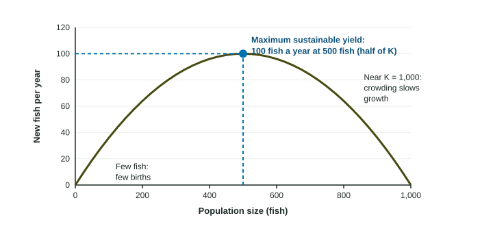

Sustainability is the thread that ties this unit together. Clearcutting, overfishing, irrigation and grazing all raise the same question: can this go on? This page defines sustainability, shows how to find the largest harvest a living resource such as fish or timber can give forever, and lists the indicators scientists watch to tell whether a system is heading the right way.
What sustainability means
A widely used definition, from a 1987 United Nations report, says sustainable development "meets the needs of the present without compromising the ability of future generations to meet their own needs." For the environment, that comes down to two rules: use living resources such as fish, forests and grass no faster than they regrow, and release wastes no faster than the environment can absorb them. Resources that do not regrow, such as minerals and fossil fuels, add a third rule: use them in ways that leave substitutes for the future.
Maximum sustainable yield
Think of a fish population with logistic growth in a lake with a carrying capacity (K) of 1,000 fish. Each year it adds new fish by reproduction. How many depends on its size:
- With few fish, there are few parents, so few young are added.
- Near K, food and space run short, so births barely exceed deaths and few are added.
- In between, at about half of K, the population adds the most new fish each year.

If people catch exactly the number added each year, the population stays the same size forever. The largest such catch is the maximum sustainable yield (MSY), and for logistic growth it is taken with the population held near K/2. Here that is about 100 fish a year from a population of 500.
A deer herd has a carrying capacity of 2,400. At what herd size is MSY taken? deer.
A lake's MSY is 100 fish a year and an agency allows 80. What percent of MSY is that? .
In practice, managers usually set catches below MSY. Population estimates are uncertain, bad weather years cut reproduction, and if the stock drops below K/2 the same catch takes a growing share, which can lead to collapse. A margin keeps the population on the safe side.
Environmental indicators
An environmental indicator is a measurement that shows the condition of an environment and which way it is moving. Five are used widely:
| Indicator | What it shows | Sign of trouble |
|---|---|---|
| Biological diversity | the health of ecosystems | falling species richness, more species at risk |
| Food production | whether people can be fed | grain per person falling |
| Atmospheric carbon dioxide and average temperature | the state of the climate | both rising |
| Human population | demand on all resources | growth faster than resources |
| Resource depletion | supplies of water, forests, fish, minerals | falling water tables, shrinking forests, collapsing fisheries |
A region's grain harvest rose from 4.0 to 4.6 million metric tons while its population rose from 6.0 to 7.5 million. Did food per person rise?
Per person: 2000, metric tons; 2020, metric tons. Change:
Reading indicators together matters: one number can look good while another shows the system running down.